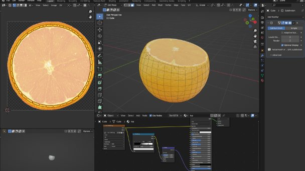
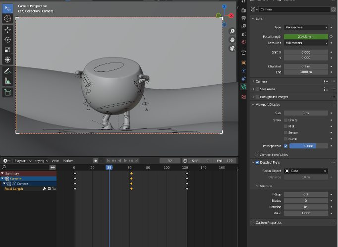
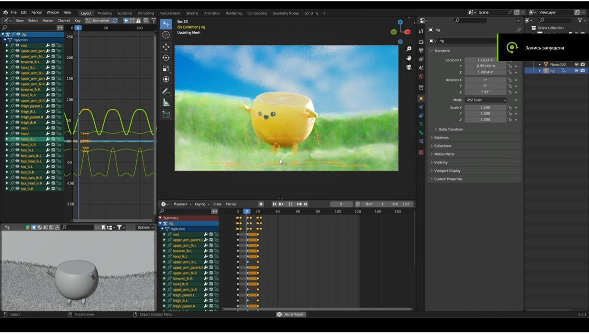

3D Modeling | Dancing Orange
The brief was open: demonstrate proficiency in Blender and After Effects.
The result was a looping 3D animation of a dancing orange character modelled,
rigged, textured, and composited from scratch.
The orange was built using subdivision surface modelling with a Boolean cut for the
fruit's cross-section. Textures were applied via UV mapping using Creative Commons
reference photography, with bump and colour ramp nodes added to the cut surface
for depth. Rigging involved rebuilding a human skeleton armature from Blender's
built-in addon, stripping it back to only the bones needed, and binding the mesh
to the rig arms and legs included to demonstrate full character rigging.

The animation was set as a seamless loop using the Cycles modifier.
The environment was built around the character: a grass-covered ground plane using a particle system, an imported sky image scaled to the scene, and an animated camera with dynamic focal length. The full scene was rendered as a PNG sequence and brought into After Effects for colour grading hue/saturation, brightness/contrast, and CC Vignette applied to reach the final look.
The project was inspired by Hey Bear Sensory's looping fruit animations on YouTube. The deliberate choice of a single vibrant subject against a contrasting blue-green environment was a nod to the Windows XP wallpaper aesthetic something familiar made strange by being given arms and a personality.